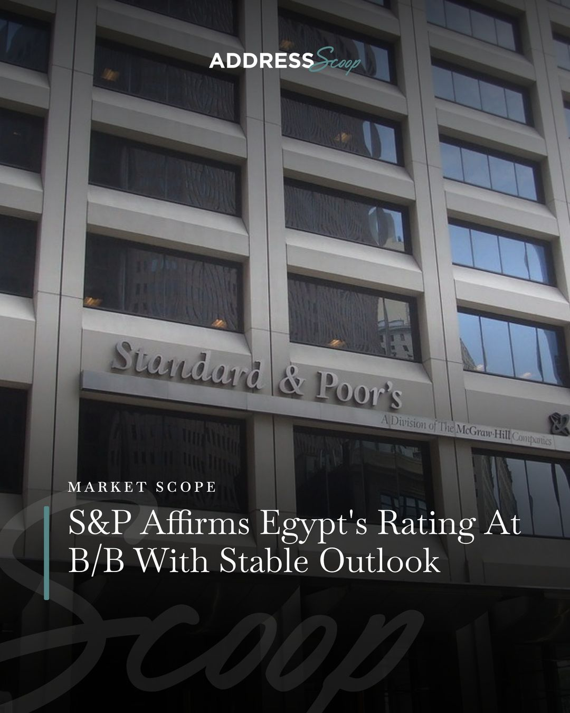

MahmoudGamal
Engineer turned marketing communicator. I explain infrastructure clearly, on camera, on paper and in the boardroom.
Results
Paid media
700 qualified leads in one month
1.45% Meta CTR, benchmark 0.9%
EGP 10M a month in spend
10 to 12 launches a month
Video
470K+ plays in June
50K+ TikTok views in 3 months
27K views on one review
Search
2 page-one keywords
190+ articles in 2 years
4+ Upwork clients
100% client retention
Automation
4 bots live around the clock
3 Instagram brands run by agents
EGP 0 in API spend
Work
Choose a project to open it. The drafts on the left are its real output.
-
Scans 62 news sources four times a day, writes English and Egyptian-Arabic carousels on the designer's templates and checks every figure against its source. The writer, designer and owner approve it on WhatsApp with one word. Every edit they make becomes a rule it follows next time.
62 sources per scan. 4 scans a day. 3 people approve, 0 retype.
Built with Node.js, Gemini, WhatsApp, Playwright, Oracle Cloud
-
Reads the developer broker groups, pulls out launches, price lists and brochures, files them per project for the sales team and turns each new launch into an on-brand carousel twice a day.
2 carousels a day. 4 document types sorted. Synced every hour.
Built with Node.js, Gemini, Cloudflare FLUX, SQLite
-
A crawler at Screaming Frog depth that also watches rankings, content, uptime and paid search, and reports into Telegram threads. I use it for every freelance client.
About 90 checks per audit. Up to 5,000 pages per crawl. Uptime checked every 15 minutes.
Built with Node.js, Playwright, SQLite, PageSpeed, Search Console, GA4
-
My own motorsport and car brand. A bot reads 44 sources, ranks the stories, writes Arabic slides, checks each photo for the exact car with a vision model and posts through the Instagram API after I approve it in Telegram.
50K+ TikTok views in 3 months. 44 sources. Every post approved.
Built with Node.js, Gemini vision, Telegram, Instagram Graph API
-
Built for the Agents at Work hackathon. It confirms cash-on-delivery orders in Egyptian Arabic, scores refusal risk, checks payment receipts with vision AI, books the courier and sends the reorder offer. Open source on GitHub. Source code on GitHub
11 steps, no human needed. 5 AI providers supported. Prompt-injection safe.
Built with Python, multi-LLM, WhatsApp Cloud API, Docker
How a post gets made
Every morning, the agents read the market: news feeds, developer groups, search results and trend charts in Arabic and English. They group what matters by audience and by content pillar.

Then they write. Bilingual copy on the brand's own rules, with real photos picked first and checked by a vision model. AI images only fill the gaps.
Before anyone sees it, every number is checked against its source. If a rewrite changes a figure, the rewrite is thrown away.
How the number lock works, as an example
Source: EGP 4.2 billion in sales
Draft: EGP 4.2 billion in sales
Humanized: about 4 billion in sales
Rejected, the number changed
One reply decides. The draft arrives on WhatsApp or Telegram. ok publishes it. Anything else is treated as an edit, and the edit becomes a rule for next time.